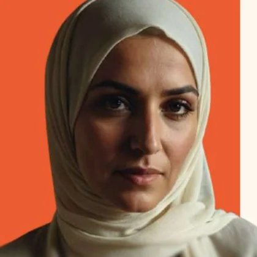
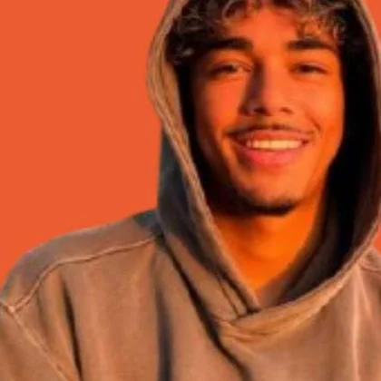
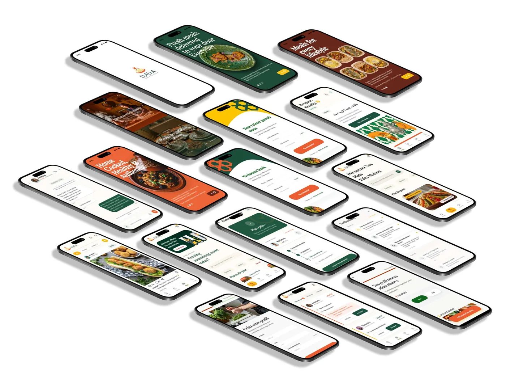
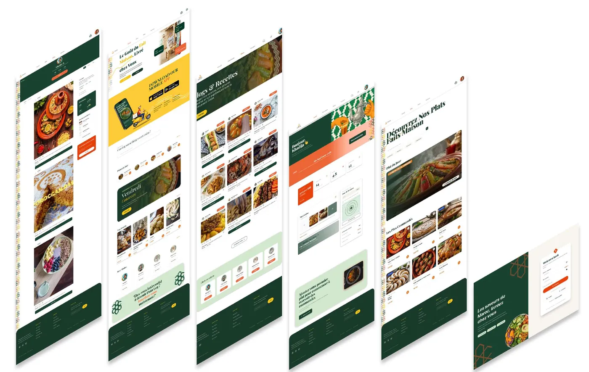
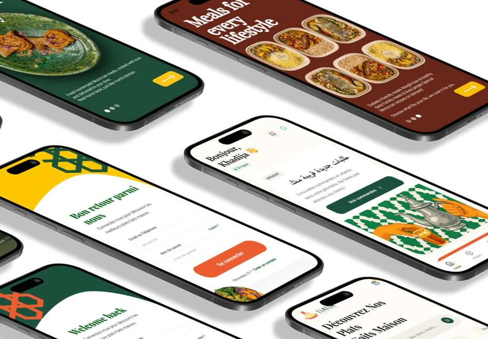

Une plateforme qui relie les femmes qui cuisinent chez elles aux clients qui cherchent du fait maison.
Étude de cas UX / UI · 2025–2026
ProjetDADA — Taste of Home
Réalisé parAya Karim, Asmaa Nejmaoui, Nissrine Amine, Hamza Zaydoune
Encadré parM. Ounsy
FormationDigital Design, option UI
01
Deux manques qui se répondent
D'un côté un savoir-faire culinaire transmis mais invisible. De l'autre des clients qui cherchent du fait maison sans canal fiable. Chacun est la solution de l'autre — il manquait l'endroit où se rencontrer.
Elle
Le talent est là, l'espace manque.
Les femmes marocaines possèdent un savoir-faire culinaire ancestral, mais n'ont ni les moyens ni l'espace d'ouvrir un commerce physique.
Revenus limités au bouche-à-oreille informel
Aucune visibilité en dehors du cercle proche
Aucune gestion structurée des commandes
Dépendance financière qui persiste
Lui
L'envie est là, le canal manque.
Les clients cherchent des plats authentiques et sains, mais aucun canal fiable ne les propose. Les plateformes existantes ignorent la cuisine traditionnelle marocaine.
Manque de confiance envers les cuisines inconnues
Impossible de vérifier hygiène et ingrédients
Plats industriels, sans authenticité
Peu d'accès à une cuisine maison de qualité
02
Ce que le questionnaire a fait remonter
Dix questions posées à des consommateurs sur leurs habitudes de commande et leurs freins. Cinq réponses ont cadré le produit.
90%
veulent être livrés en moins de 30 minutes
85%
préfèrent commander de la cuisine marocaine en ligne
78%
attendent un suivi de commande en temps réel
72%
préfèrent une application dédiée à WhatsApp
68%
lisent les avis clients avant de commander
Résultats déclaratifs du questionnaire — la plateforme n'étant pas en ligne, ce ne sont pas des chiffres d'usage.
03
Deux profils, deux peurs opposées
Elle a peur de ne pas y arriver. Lui a peur de mal tomber. Toute l'interface se construit sur ces deux craintes.

Farah El Idrissi · 42 ans · Casablanca
« Je veux gagner de l'argent depuis chez moi — mais puis-je vraiment faire cela ? »
Un revenu depuis la maison, sans local ni capital
Une plateforme simple, utilisable sur un téléphone basique
Peur de la technologie et du paiement en ligne
Peur des avis négatifs et de ne pas trouver de clients

Youssef Benali · Étudiant · Commande sur mobile
« Je veux de la bonne nourriture maison, pas de la restauration rapide. »
Trouver facilement des plats marocains faits maison
Photos, avis et notes avant de commander
Doute sur l'hygiène et les conditions de préparation
Peur que le plat ne corresponde pas aux photos
04
Ce qui les relie
Cinq fonctions, posées exactement là où une peur d'un côté rencontre une peur de l'autre.
ElleOuvrir un commerce coûte trop cher
01Profil cuisinièrePhoto, spécialités, tarifs, disponibilités et avis : une vitrine sans local.
LuiNe pas savoir à qui il achète
ElleNe pas savoir présenter ses plats
02Catalogue de platsMenu avec photos, ingrédients, prix et disponibilités en temps réel.
LuiQue le plat ne ressemble pas à la photo
ElleGérer les commandes au téléphone
03Système de commandeCommande en ligne, suivi en temps réel, créneaux de livraison ou de retrait.
LuiÊtre livré en retard, sans nouvelles
ElleNe pas être payée
04Paiement sécuriséEn ligne ou à la livraison, portefeuille intégré, transactions protégées des deux côtés.
LuiPayer d'avance sans garantie
ElleRecevoir des avis injustes
05Système d'avisNotes et commentaires vérifiés : la confiance se construit publiquement, des deux côtés.
LuiTomber sur une cuisine douteuse
L'impact visé — transformer un savoir-faire culinaire ancestral en autonomie financière réelle : sans local, sans capital, sans intermédiaire.
05
Le produit
Une application pour les deux côtés du marché, et un site qui sert de vitrine. Le vert accueille, l'orange déclenche l'action.

Application mobile — onboarding, connexion, accueil personnalisé, catalogue de plats, fiche cuisinière, commande et suivi.

Site web — découverte des plats, profils de cuisinières et parcours de commande sur grand écran.
Le détail qui rassure
Sur l'accueil, la cuisinière est saluée par son prénom et son statut du jour s'affiche en arabe comme en français. Pour Farah, qui hésite devant une nouvelle application, cette première ligne fait la différence entre « c'est pour moi » et « ce n'est pas pour moi ».

06
Identité
Un tagine stylisé, trois couleurs et trois alphabets — dont l'arabe, qui porte le nom de la marque.
Orange#E86A1F — chaleur, appétit
Vert#1F3D2B — confiance, naturel
Jaune#FDB515 — épices, générosité
Crème#FCF9F0 — fond
Playfair DisplayLe nom DADA
RobotoBaseline et textes secondaires
Aref Ruqaaدادة
Le nom. En darija, « dada » désigne affectueusement la femme qui cuisine pour les autres — une figure maternelle associée au savoir-faire et à la transmission des recettes.
La forme. Le tagine stylisé porte la calligraphie ; le jaune à l'intérieur figure les épices et la richesse des plats.
07
Ce qu'il reste à prouver
Les pourcentages viennent du questionnaire, pas de l'usage : la plateforme n'est pas encore en ligne.
Les cuisinières vont-elles jusqu'au bout ?
Part des profils commencés qui sont publiés avec au moins un plat.
La confiance se construit-elle ?
Part des commandes suivies d'un avis vérifié, et délai avant la commande répétée.
La rapidité tient-elle ?
90 % des répondants attendent moins de 30 minutes : l'engagement le plus exposé.